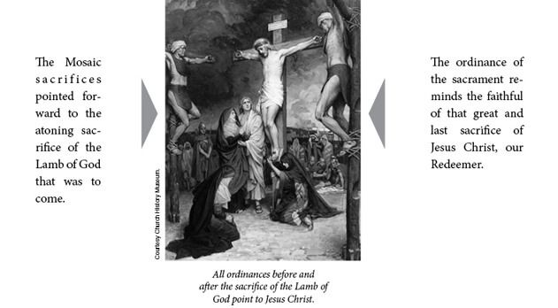

What are the blessings of partaking of the sacrament? (18:6) “Those who would deny themselves the blessing of the sacrament by not attending sacrament meeting or by not thinking of the Savior during the services surely must not understand the great opportunity to be forgiven, to have his Spirit to guide and comfort them! What more could anyone ask?
“As we worthily partake of the sacrament, we will sense those things we need to improve in and receive the help and determination to do so. No matter what our problems, the sacrament always gives hope” (Groberg, “Beauty and Importance of the Sacrament,” 38).
Elder Bruce R. McConkie testified: “Those who partake worthily of the sacramental emblems, by so doing, covenant on their part to remember the body of the Son of God who was crucified for them; to take upon them his name, as they did in the waters of baptism; and to ‘always remember him and keep his commandments which he has given them; that they may always have his Spirit to be with them’ (D&C 20:77). Thus those who partake worthily of the sacrament—and the same repentance and contrition and desires for righteousness should precede the partaking of the sacrament as precede baptism—all such receive the companionship of the Holy Spirit. Because the Spirit will not dwell in an unclean tabernacle, they thus receive a remission of their sins through the sacramental ordinance. Through this ordinance the Lord puts a seal of approval upon them; they are renewed in spirit and become new creatures of the Holy Ghost, even as they did at baptism; they put off the old man of sin and put on Christ whose children they then are” (New Witness, 239–40).
Why did the sacrament replace animal sacrifices? (18:6–7) “As sacrifice was thus to cease [see 3 Nephi 15:2–5] with the occurrence of the great event toward which it pointed, there must needs be a new ordinance to replace it, an ordinance which also would center the attention of the saints on the infinite and eternal atonement. . . . Sacrifice stopped and sacrament started. It was the end of the old era, the beginning of the new. Sacrifice looked forward to the shed blood and bruised flesh of the Lamb of God. The sacrament was to be in remembrance of his spilt blood and broken flesh, the emblems, bread and wine, typifying such as completely as had the shedding of the blood of animals in their days” (McConkie, Doctrinal New Testament Commentary, 1:719–20).
What can we do to “always remember” Him? (18:11) “I wish to elaborate on three aspects of what it means to ‘always remember him’: first, seeking to know and follow His will; second, recognizing and accepting our obligation to answer to Christ for every thought, word, and action; and third, living with faith and without fear so that we can always look to the Savior for the help we need” (Christofferson, “To Always Remember Him,” 49).
In discussing these three aspects, Elder D. Todd Christofferson said the following:
“1. Seek to know and follow the will of Christ just as He sought the will of the Father. . . . You and I can put Christ at the center of our lives and become one with Him as He is one with the Father (see John 17:20–23). We can begin by stripping everything out of our lives and then putting it back together in priority order with the Savior at the center. We should first put in place the things that make it possible to always remember Him—frequent prayer and scripture study, thoughtful study of apostolic teachings, weekly preparation to partake of the sacrament worthily, Sunday worship, and recording and remembering what the Spirit and experience teach us about discipleship. . . .
“2. Prepare to answer to Christ for every thought, word, and action. . . . Always remembering Him, therefore, means that we always remember that nothing is hidden from Him. There is no part of our lives, whether act, word, or even thought, that can be kept from the knowledge of the Father and the Son. No cheating on a test, no instance of shoplifting, no lustful fantasy or indulgence, and no lie is missed, overlooked, hidden, or forgotten. Whatever we ‘get away with’ in life or manage to hide from other people, we must still face when the inevitable day comes that we are lifted up before Jesus Christ, the God of pure and perfect justice. . . .
“3. Fear not and look to the Savior for help. . . . In short, to ‘always remember him’ means that we do not live our lives in fear. We know that challenges, disappointments, and sorrows will come to each of us in different ways, but we also know that in the end, because of our divine Advocate, all things can be made to work together for our good (see D&C 90:24; 98:3). It is the faith expressed so simply by President Gordon B. Hinckley (1910–2008) when he would say, ‘Things will work out.’ When we always remember the Savior, we can ‘cheerfully do all things that lie in our power,’ confident that His power and love for us will see us through” (“To Always Remember Him,” 50–55).
How can the Spirit bless my life? (18:11) “By participating weekly and appropriately in the ordinance of the sacrament we qualify for the promise that we will ‘always have his Spirit to be with [us]’ (D&C 20:77). That Spirit is the foundation of our testimony. It testifies of the Father and the Son, brings all things to our remembrance, and leads us into truth. It is the compass to guide us on our path. This gift of the Holy Ghost, President Wilford Woodruff taught, ‘is the greatest gift that can be bestowed upon man’” (Oaks, “Sacrament Meeting and the Sacrament,” 17).
“And This Shall Ye Do in Remembrance of [Me]” (3 Nephi 18:7)
How can you experience all you should through the ordinance of the sacrament? (18:12) Think of times when the sacrament has been especially meaningful to you. What was happening in your life that made it so? What attitudes or actions make a spiritual sacrament experience more difficult? What could you do to make partaking of the sacrament more meaningful?
We often see people do less than is commanded, but is it possible to go too far in our religious observance? (18:13) “Another sign of spiritual immaturity and sometimes apostasy is when one focuses on certain gospel principles or pursues ‘gospel hobbies’ with excess zeal. Almost any virtue taken to excess can become a vice. . . .
“An example might be when one advocates additions to the Word of Wisdom that are not authorized by the Brethren and proselytes others to adopt these interpretations. If we turn a health law or any other principle into a form of religious fanaticism, we are looking beyond the mark.
“Some who are not authorized want to speak for the Brethren and imply that their message contains the ‘meat’ the Brethren would teach if they were not constrained to teach only the ‘milk’” (Cook, “Looking beyond the Mark,” 42).
How is it possible to “pray always”? (18:15) “Praying always entails constantly being conscious of God and his plan of salvation. It consists of having a continual attitude which directs us during every waking moment of mortality, of maintaining a spiritual posture of thankfulness and reliance on the Lord, of desiring the companionship of the Holy Ghost. Brigham Young noted that to pray always is to live as we pray: ‘I do not know any other way for the Latter-day Saints than for every breath to be virtually a prayer for God to guide and direct his people. . . . Every breath should virtually be a prayer that God will preserve us from sin and from the effects of sin’” (Parry, “‘Pray Always,’” 144).
How do I pray more effectively and how does prayer shield me from temptation? (18:18–19) “Prayer is the act by which the will of the Father and the will of the child are brought into correspondence with each other. The object of prayer is not to change the will of God but to secure for ourselves and for others blessings that God is already willing to grant but that are made conditional on our asking for them” (Bible Dictionary, “Prayer,” 707).
“If you will earnestly seek guidance from your Heavenly Father, morning and evening, you will be given the strength to shun any temptation” (Benson, “Message to the Rising Generation,” 32).
President Ezra Taft Benson gave the following specific counsel about how to make our prayers more effective: “Here are five ways to improve our communication with our Heavenly Father:
“1. We should pray frequently. We should be alone with our Heavenly Father at least two or three times each day—‘morning, mid-day, and evening,’ as the scripture indicates (Alma 34:21). In addition, we are told to pray always (see 2 Ne. 32:9; D&C 88:126). This means that our hearts should be full, drawn out in prayer unto our Heavenly Father continually (see Alma 34:27).
“2. We should find an appropriate place where we can meditate and pray. We are admonished that this should be ‘in [our] closets, and [our] secret places, and in [our] wilderness’ (Alma 34:26). That is, it should be free from distraction, in secret (see 3 Ne. 13:5–6).
“3. We should prepare ourselves for prayer. If we do not feel like praying, then we should pray until we do feel like praying. We should be humble (see D&C 112:10). We should pray for forgiveness and mercy (see Alma 34:17–18). We must forgive anyone against whom we have bad feelings (see Mark 11:25). Yet the scriptures warn that our prayers will be vain if we ‘turn away the needy, and the naked, and visit not the sick and afflicted, and impart [not] of [our] substance’ (Alma 34:28).
“4. Our prayers should be meaningful and pertinent. We should avoid using the same phrases in each prayer. Any of us would become offended if a friend said the same words to us each day, treated the conversation as a chore, and could hardly wait to finish in order to turn on the television set and forget us.
“In all of our prayers it is well to use the sacred pronouns of the scriptures—thee, thou, thy, and thine—when addressing Deity instead of the more common pronouns of you, your, and yours. By doing so, we show greater respect to Deity.
“For what should we pray? We should pray about our work, against the power of our enemies and the devil, for our welfare and the welfare of those around us. We should counsel with the Lord regarding all our decisions and activities (see Alma 37:36–37). We should be grateful enough to give thanks for all we have (see D&C 59:21). We should confess His hand in all things. Ingratitude is one of our great sins.
“The Lord has declared in modern revelation: ‘And he who receiveth all things with thankfulness shall be made glorious; and the things of this earth shall be added unto him, even an hundred fold, yea, more’ (D&C 78:19).
“We should ask for what we need, taking care that we not ask for things that would be to our detriment (see James 4:3). We should ask for strength to overcome our problems (see Alma 31:31–33). We should pray for the inspiration and well-being of the President of the Church, the General Authorities, our stake president, our bishop, our quorum president, our home teachers, family members, and our civic leaders. Other suggestions could be made, but with the help of the Holy Ghost we will know about what we should pray (see Rom. 8:26–27).
“5. After making a request through prayer, we have a responsibility to assist in its being granted. We should listen. Perhaps while we are on our knees, the Lord wants to counsel us.
“President David O. McKay taught: ‘Sincere praying implies that when we ask for any virtue or blessing, we should work for the blessing and cultivate the virtue’” (“Pray Always,” 2–4).
What are the blessings of family prayer? (18:21) “Parents should teach their children to pray. The child learns both from what the parents do and what they say. The child who sees a mother or a father pass through the trials of life with fervent prayer to God and then hears a sincere testimony that God answered in kindness will remember what he or she saw and heard. When trials come, that individual will be prepared” (Eyring, “That He May Write upon Our Hearts,” 5).
President Gordon B. Hinckley expressed this testimony of the importance of family prayer: “I know of no single practice that will have a more salutary effect upon your lives than the practice of kneeling together as you begin and close each day. Somehow the little storms that seem to afflict every marriage are dissipated when, kneeling before the Lord, you thank him for one another, in the presence of one another, and then together invoke his blessings upon your lives, your home, your loved ones, and your dreams.
“God then will be your partner, and your daily conversations with him will bring peace into your hearts and a joy into your lives that can come from no other source. Your companionship will sweeten through the years; your love will strengthen. Your appreciation for one another will grow.
“Your children will know the security of a home where dwells the Spirit of the Lord. You will gather them together in that home, as the Church has counseled, and teach them in love. They will know parents who respect one another, and a spirit of respect will grow in their hearts. They will experience the security of the kind word softly spoken, and the tempests of their own lives will be stilled. They will know a father and mother who, living honestly with God, live honestly also with one another and with their fellowmen. They will grow up with a sense of appreciation, having heard their parents in prayer express gratitude for blessings great and small. They will mature with faith in the living God.
“The destroying angel of domestic bitterness will pass you by and you will know peace and love throughout your lives which may be extended into all eternity. I could wish for you no greater blessing” (Hinckley, “Except the Lord Build the House . . . ,” 72).
How can I help my ward or branch be more welcoming? (18:22–23) “The Savior’s commandment to the Nephites to ‘not forbid any man from coming unto you when ye shall meet together’ has special application to us in the Church today. While we may not verbally ‘forbid’ others—members and nonmembers alike—from our fellowship in the Church, they may feel ‘forbidden’ by reason of our attitudes and our actions. [President] M. Russell Ballard observed: ‘I believe we members do not have the option to extend the hand of fellowship only to relatives, close friends, certain Church members and those selected nonmembers who express an interest in the Church. Limiting or withholding our fellowship seems to me to be contrary to the gospel of Jesus Christ’” (McConkie et al., Doctrinal Commentary, 4:127).
Brothers McConkie, Millet, and Top continued quoting President M. Russell Ballard as follows: “‘We might ask ourselves how the newcomers in our wards would be treated if we were the only ones they ever met. Every member of the Church should foster the attributes of warmth, sincerity, and love for the newcomers. . . .
“‘Brothers and sisters, we members must help with the conversion process by making our wards and branches friendly places, with no exclusivity, where all people feel welcome and comfortable. . . . My message is urgent because we need to retain in full fellowship many more of the new converts and return to activity many more of the less active. I urge you to increase the spirit of friendship and pure Christian fellowship in your neighborhoods. A new convert or recently activated member should feel the warmth of being wanted and being welcomed into full fellowship of the Church. Members and leaders of the Church should nurture and love them as Jesus would’” (McConkie et al., Doctrinal Commentary, 4:127).
How can I possibly do what Jesus did? (18:24) “What had the Nephites seen Him do, and could I possibly do those things in my home? When the people desired for Him to tarry with them a little longer, He had compassion upon them and lingered with them. Then He healed them, prayed with them, taught them, wept with them, blessed their little children one by one, fed them, and administered and shared the sacrament that they might covenant to always remember Him. His ministry among them was about teaching and caring for each individual, and about completing the work His Father had commanded Him to do. There was no thought for Himself” (Tanner, “'I Am the Light Which Ye Shall Hold Up',” 103).
What does it mean to partake of the sacrament worthily? (18:28–29) Or how do we know if we are unworthy? “If we desire to improve (which is to repent) and are not under priesthood restriction, then, in my opinion, we are worthy. If, however, we have no desire to improve, if we have no intention of following the guidance of the Spirit, we must ask: Are we worthy to partake, or are we making a mockery of the very purpose of the sacrament, which is to act as a catalyst for personal repentance and improvement?” (Groberg, “Beauty and Importance of the Sacrament,” 38–39).
Elder John H. Groberg continued: “If we remember the Savior and all he has done and will do for us, we will improve our actions and thus come closer to him, which keeps us on the road to eternal life.
“If, however, we refuse to repent and improve, if we do not remember him and keep his commandments, then we have stopped our growth, and that is damnation to our souls.
“The sacrament is an intensely personal experience, and we are the ones who knowingly are worthy or otherwise” (“Beauty and Importance of the Sacrament,” 38–39).
How should we “minister” to those who have left the fold? (18:30–32) “As the Lord says, to ‘not cast out’ is, by itself, an inadequate response; we must, additionally, make room for them and give them a place among us. Always we must ‘continue to minister,’ because, for some, we ‘shall be the means of bringing salvation to them.’ No wonder this effort does not involve a new program. Rather, it involves a principle—the fundamental and regular keeping of the second, great commandment” (Maxwell, “Continue to Minister,” 10).
“Our attitude toward the less active should be that we are fellow-servants, just as was the case even with angels who have bidden respectful and kneeling mortals to arise, since the angels were fellow-servants (see Rev. 22:8–9). Since you and I are at least ‘a little lower than the angels’ (Ps. 8:5), this posture of service and of being fellow-servants surely includes us. . . .
“Note that the resurrected Jesus, having completed a perfect mortal ministry, gives us this counsel clearly reflecting the style and substance of his leadership and charity, reminding us that we know not who will return and repent. Note, too, that without belaboring it, the sequence is first the return, then a completion of the process of change in a nurturing and ministering environment. The Lord said He ‘shall heal them,’ but we ‘shall be the means of bringing salvation unto them.’ This is a wondrous scripture, full of wisdom and direction and consolation. We should not forget that for many in the Church who do not yet have the witness of the Holy Ghost that Jesus is the Christ, they must believe on the words of those of us who do know (see D&C 46:13–14)” (“Continue to Minister,” 11).
For whom should you “continue to minister”? (18:32) Think of the people you care about or for whom you have a responsibility. Is there someone who might be reached or could be blessed by a renewed effort to reach out in love and concern? What is the Spirit urging you to do for him or her? What more might you do to make him or her feel valued and needed? How does love help us minister to those who may have left the fold of Christ? “After all is said and done, true ministering is accomplished one by one with love as the motivation. . . . With love as the motivation, miracles will happen, and we will find ways to bring our ‘missing’ sisters and brothers into the all-inclusive embrace of the gospel of Jesus Christ” (Bingham, “Ministering as the Savior Does,” 106).
What is the significance of the Savior’s “touching” of each of His disciples? (18:36–37) “It appears from verse 37 that the touching here referred to is a laying on of hands—a setting apart or ordination [see Moroni 2:1–3].
“As a result of the fulfillment of the law and as part of the establishment of a new dispensation and new Church, the Savior ordains and sets apart his disciples and gives them authority to confer the gift of the Holy Ghost and set in order the new organization. The words spoken by Christ to the Twelve—which were not heard by the multitude—were preserved (see Moroni 2)” (McConkie et al., Doctrinal Commentary, 4:131).
Brother Daniel H. Ludlow provided this insight: “When the Savior left his disciples after his first appearance to them, ‘he touched with his hand the disciples whom he had chosen, one by one, even until he had touched them all, and spake unto them as he touched them. . . . The disciples bare record that he gave them power to give the Holy Ghost. And I will show unto you hereafter that this record is true’ (3 Nephi 18:36–37).
“Evidently the pronoun I in this quotation refers to the historian Mormon when he promises ‘I will show unto you hereafter that this record is true’; that is, Mormon is going to show later in his record that the Savior did give the disciples the power to bestow the Holy Ghost. Some persons might question whether or not Mormon does indicate this later in his record. However, it is of interest to note that as soon as Moroni starts writing, he gives us the exact wording of the prayer of the Savior on this occasion (see Moroni 2)” (Ludlow, Companion to Your Study of the Book of Mormon, 274–75).
What can we learn from the first day of the Savior’s visit? (18:39) “Thus ended the first day. The incomparable Sermon at the Temple was over. It was a manifestation of divine will and presence never to be forgotten. From this experience come many things: teachings of practical ethical value; an understanding of that which was fulfilled and that which remained yet to be fulfilled; a comprehension of the continuity and transition from the old law to the new; knowledge and testimony of the resurrection and exaltation of Jesus Christ; commandments and covenants; and also a basis for religious ritual” (Welch, Sermon at the Temple, 82).
Brother John W. Welch observed the following about the results of the first day of the Savior’s visit: “Out of such an experience would naturally flow sacred ceremonies, for it was typical and usual for the temple in Israel ‘to routinize the momentous, thus rendering it part and parcel of the ongoing religious experience of the individual Israelite and of the people, collectively.’ Evidently, such also occurred among the Nephites. Several texts from the Sermon at the Temple are known to have been ritually intended and oriented. From the Sermon at the Temple came the Nephite liturgical prayers for baptism (see 3 Nephi 11:23–28), for the administration of the sacrament (see 3 Nephi 18:1–14; Moroni 4–5), for the bestowal of the gift of the Holy Ghost, and for the ordination of priests and teachers (see Moroni 2–3).
“This gives reason to believe that more of the Sermon at the Temple, perhaps much more, was ritually understood and transmitted. The words of Jesus (as many as were permissible) were written down, apparently immediately, and checked by Jesus (see 3 Nephi 23:7–9)—further indication that the Nephite disciples gave sacred and meticulous regard to each element of the Sermon at the Temple. Not all is known to us, of course, for the people were taught secret things that were ‘unspeakable’ and ‘not lawful to be written’ (3 Nephi 26:18), and many things were ‘forbidden them that they should utter’ (3 Nephi 28:14). But as much as possible, they went forth and established the Church of Jesus Christ, based upon these very ‘words of Jesus’ (3 Nephi 28:34), words that profoundly put all things into perspective and coherence. These things point toward a view of the Sermon at the Temple as a sacred experience that was recorded, revered, repeated, and institutionalized, that could be ritually represented and reenacted for other audiences. It seems to me that something of this sort indeed occurred, for the disciples went forward to preach abroad not only words and ideas, but also dramatic events, demonstrating ‘things which they had both heard and seen’ (3 Nephi 27:1)” (Welch, Sermon at the Temple, 82–83).
